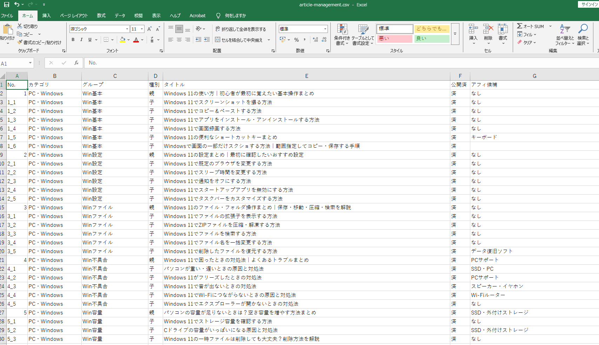

ChatGPTでブログを作ってみた④｜記事管理用CSVを作る
ブログの記事番号、カテゴリ、親子関係、タイトル、公開状況を管理するCSVを作り、ChatGPTへ渡せる形に整える方法を紹介します。

結論
記事数が増える前に、1行を1記事として管理するCSVを作ります。ファイル名、記事タイトル、親子関係、公開状況を同じ番号で結びつけるのがポイントです。
1. 必要な列を決める
最小構成は次の7列です。
| 列 | 入れる内容 |
|---|---|
| No. | 記事とファイルを結ぶ管理番号 |
| カテゴリ | サイト上の大分類 |
| グループ | 親子記事をまとめる単位 |
| 種別 | 親・子・孫 |
| タイトル | 公開する記事タイトル |
| 公開済 | 未・済 |
| アフィ候補 | 紹介できそうなサービス |
必要になったら、slug、公開日、確認担当などを追加します。最初から列を増やしすぎると更新が止まりやすくなります。
2. 管理番号は文字列として扱う
1_2や19_2_1のように、親子関係が分かる番号にします。
No.,カテゴリ,グループ,種別,タイトル,公開済,アフィ候補
1,Web全般,Webサイト,親,Webサイトとは？,未,なし
1_1,Web全般,Webサイト,子,Webサイトを公開する方法,未,レンタルサーバーハイフンを使った1-2はExcelで日付に変換されることがあります。アンダースコアなら管理番号として表示されやすくなります。
3. ChatGPTに表を整えてもらう
③の記事一覧を貼り、次のように依頼します。
次の記事一覧をCSV形式にしてください。
列は「No.,カテゴリ,グループ,種別,タイトル,公開済,アフィ候補」です。
No.は親を1、子を1_1の形式にし、公開済はすべて「未」、アフィ候補がなければ「なし」にしてください。
Excelで日付化しないよう、管理番号にハイフンは使わないでください。
【記事一覧】出力後は、番号重複・列ずれ・タイトル内のカンマを確認します。

このように、1行を1記事として「No.」「カテゴリ」「グループ」「種別」「タイトル」「公開済」「アフィ候補」を並べます。親記事と子記事を番号でそろえておくと、記事数が増えても関係を追いやすくなります。
4. CSVをExcelで開くときの注意
日本語が文字化けする場合は、UTF-8のCSVとして保存します。Excelへ直接ダブルクリックで開くより、「データ」からCSVを読み込むと文字コードや列形式を指定しやすくなります。
編集後に保存するときも、CSV UTF-8形式を選びます。
5. 更新ルールを決める
記事を作るたびに、次の順で更新します。
- CSVで「未」の記事を選ぶ
- No.とタイトルを本文作成に使う
- ファイル名を
No..mdにする - 公開後に「済」へ変える
- タイトルや番号を変更したらCSVとファイルを同時に直す
最新のCSVを正本にすると、どれが未作成か分からなくなるのを防げます。
今回の完成チェック
- 1行1記事になっている
- 管理番号に重複がない
- 管理番号とファイル名のルールが決まった
- 未公開記事を絞り込める
- UTF-8で保存できた
詳しい手順はこちら
- ChatGPTでCSVファイルを作る方法
- ブログの記事管理表をGoogleスプレッドシートで作る方法
- ChatGPTでCSVを作ってGoogleスプレッドシートへ取り込む方法
- ChatGPTで大量の記事を作るときの管理方法｜CSV・スプレッドシートで重複や投稿漏れを防ぐ
次は、CSVから1記事を選び、ChatGPTで本文を作ります。
親記事
ChatGPTでブログを作ってみた｜企画から公開・収益化までの全手順

企業の情報システム・DX推進・マーケティング業務などを経験。PC・Webサービス・業務自動化など、実際に試して分かったことを初心者向けに解説しています。
運営者情報を見る →